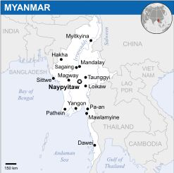
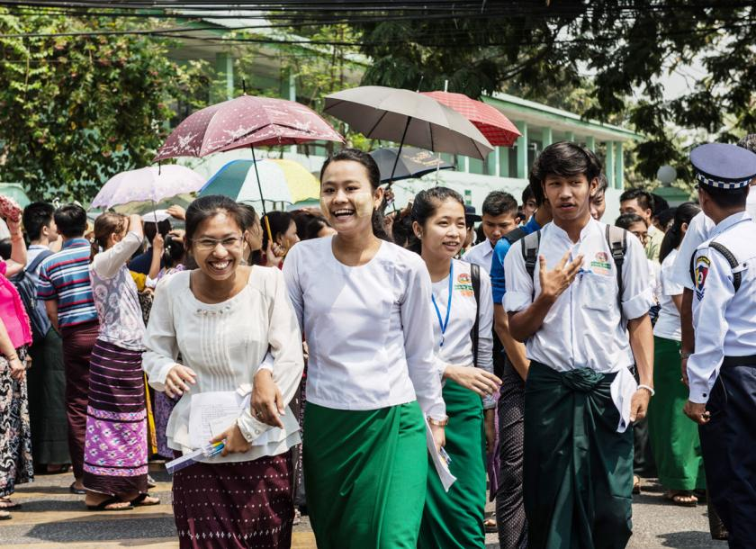

|

As of 2017, the population is about 54 million. Myanmar is 676,578 square kilometres (261,228 square miles) in size. Its capital city is Naypyidaw, and its largest city and former capital is Yangon(Rangoon). Myanmar has been a member of the Association of Southeast Asian Nations(ASEAN) since 1997. Early civilisations in Myanmar included the Tibeto-Burman-speaking Pyu city-states in Upper Burma and the Mon kingdoms in Lower Burma. In the 9th century, the Bamar people entered the upper Irrawaddy valley and, following the establishment of the Pagan Kingdom in the 1050s, the Burmese language, culture and Theravada Buddhism slowly became dominant in the country. The Pagan Kingdom fell due to the Mongol invasions and several warring states emerged. In the 16th century, reunified by the Taungoo dynasty, the country was for a brief period the largest empire in the history of Mainland Southeast Asia. The early 19th century Konbaung dynasty ruled over an area that included modern Myanmar and briefly controlled Manipur and Assam as well. The British took over the administration of Myanmar after three Anglo-Burmese Wars in the 19th century and the country became a British colony. Myanmar was granted independence in 1948, as a democratic nation. In 1962, it became a military dictatorship.
.jpg)
For most of its independent years, the country has been engrossed in rampant ethnic strife and its myriad ethnic groups have been involved in one of the world's longest-running ongoing civil wars. During this time, the United Nations and several other organisations have reported consistent and systematic human rights violations in the country. In 2011, the military junta was officially dissolved following a 2010 general election, and a nominally civilian government was installed. This, along with the release of Aung San Suu Kyi and political prisoners, has improved the country's human rights record and foreign relations, and has led to the easing of trade and other economic sanctions. There is, however, continuing criticism of the government's treatment of ethnic minorities, its response to the ethnic insurgency, and religious clashes. In the landmark 2015 election, Aung San Suu Kyi's party won a majority in both houses. However, the Burmese military remains a powerful force in politics.
Myanmar is a country rich in jade and gems, oil, natural gas and other mineral resources. In 2013, its GDP (nominal) stood at US$56.7 billion and its GDP (PPP) at US$221.5 billion. The income gap in Myanmar is among the widest in the world, as a large proportion of the economy is controlled by supporters of the former military government. As of 2016, Myanmar ranks 145 out of 188 countries in human development, according to the Human Development Index.
.jpg)
Both the names Myanmar and Burma derive from the earlier Burmese Mranma, an ethnonym for the majority Bamar ethnic group, of uncertain etymology. In 1989, the military government officially changed the English translations of many names dating back to Burma's colonial periodor earlier, including that of the country itself: "Burma" became "Myanmar". The renaming remains a contested issue. Many political and ethnic opposition groups and countries continue to use "Burma" because they do not recognise the legitimacy of the ruling military government or its authority to rename the country.
In April 2016, soon after taking office, Aung San Suu Kyi clarified that foreigners are free to use either name, "because there is nothing in the constitution of our country that says that you must use any term in particular. The country's official full name is the "Republic of the Union of Myanmar"
Countries that do not officially recognize that name use the long form "Union of Burma" instead
In English, the country is popularly known as either "Burma" or "Myanmar".
Both these names are derived from the name of the majority Burmese Bamar ethnic group. Myanmar is considered to be the literary form of the name of the group, while Burma is derived from "Bamar", the colloquial form of the group's name. Depending on the register used, the pronunciation would be Bama or Myamah.
The name Burmahas been in use in English since the 18th century.
Burma continues to be used in English by the governments of many countries, such as Canada and the United Kingdom. Official United States policy retains Burma as the country's name, although the State Department's website lists the country as "Burma (Myanmar)" and Barack Obama has referred to the country by both names. The Czech Republic officially uses Myanmar, although its Ministry of Foreign Affairsmentions both Myanmar and Burma on its website. The United Nations uses Myanmar, as do the Association of Southeast Asian Nations, Australia, Russia, Germany, China, India, Bangladesh, Norway, Japan and Switzerland.
Most English-speaking international news media refer to the country by the name Myanmar, including the BBC, CNN, Al Jazeera, Reuters, RT (Russia Today) and the Australian Broadcasting Corporation(ABC)/Radio Australia.
Myanmar is known with a name deriving from Burma as opposed to Myanmar in Spanish, Italian, Romanian, and Greek – Birmania being the local version of Burma in the Spanish language, for example. Myanmar used to be known as "Birmânia" in Portuguese, and as "Birmanie" in French. As in the past, French-language media today consistently use Birmanie.
Population
The provisional results of the 2014 Myanmar Census show that the total population is 51,419,420. This figure includes an estimated 1,206,353 persons in parts of northern Rakhine State, Kachin State and Kayin State who were not counted. People who were out of the country at the time of the census are not included in these figures. There are over 600,000 registered migrant workers from Myanmar in Thailand, and millions more work illegally. Burmese migrant workers account for 80% of Thailand's migrant workers. Population density is 76 per square kilometre (200/sq mi), among the lowest in Southeast Asia.
Myanmar's fertility rate as of 2011 is 2.23, which is slightly above replacement level and is low compared to Southeast Asiancountries of similar economic standing, such Cambodia (3.18) and Laos (4.41). There has been a significant decline in fertility, from a rate of 4.7 children per woman in 1983, down to 2.4 in 2001, despite the absence of any national population policy. The fertility rate is much lower in urban areas. The relatively rapid decline in fertility is attributed to several factors, including extreme delays in marriage (almost unparalleled among developing countries in the region), the prevalence of illegal abortions, and the high proportion of single, unmarried women of reproductive age, with 25.9% of women aged 30–34 and 33.1% of men and women aged 25–34 single.
These patterns stem from economic dynamics. The economic hardship, which results in the delay of marriage and family-building; the average age of marriage in Myanmar is 27.5 for men, 26.4 for women.
Myanmar is ethnically diverse. The government recognises 135 distinct ethnic groups. There are at least 108 different ethnolinguistic groups in Myanmar, consisting mainly of distinct Tibeto-Burman peoples, but with sizeable populations of Tai–Kadai, Hmong–Mien, and Austroasiatic (Mon–Khmer) peoples. The Bamar form an estimated 68% of the population. 10% of the population are Shan. The Kayin make up 7% of the population. The Rakhine people constitute 4% of the population. Overseas Chinese form approximately 3% of the population. Myanmar's ethnic minority groups prefer the term "ethnic nationality" over "ethnic minority" as the term "minority" furthers their sense of insecurity in the face of what is often described as "Burmanisation"—the proliferation and domination of the dominant Bamar culture over minority cultures.
Education

According to the UNESCO Institute of Statistics, Myanmar's official literacy rate as of 2000 was 90%. Historically, Myanmar has had high literacy rates. To qualify for least developed country status by the UN to receive debt relief, Myanmar lowered its official literacy rate from 79% to 19% in 1987. The educational system of Myanmar is operated by the government agency, the Ministry of Education. The education system is based on the United Kingdom's system due to nearly a century of British and Christian presences in Myanmar. Nearly all schools are government-operated, but there has been a recent increase in privately funded English language schools. Schooling is compulsory until the end of elementary school, approximately about 9 years old, while the compulsory schooling age is 15 or 16 at international level.
There are 101 universities, 12 institutes, 9 degree colleges and 24 colleges in Myanmar, a total of 146 higher education institutions. There are 10 Technical Training Schools, 23 nursing training schools, 1 sport academy and 20 midwifery schools. There are 2047 Basic Education High Schools, 2605 Basic Education Middle Schools, 29944 Basic Education Primary Schools and 5952 Post Primary Schools. 1692 multimedia classrooms exist within this system.
See Galllery...
Health
The general state of health care in Myanmar is poor. The government spends anywhere from 0.5% to 3% of the country's GDP on health care, consistently ranking among the lowest in the world. Although health care is nominally free, in reality, patients have to pay for medicine and treatment, even in public clinics and hospitals. Public hospitals lack many of the basic facilities and equipment.
The 2010 maternal mortality rate per 100,000 births for Myanmar is 240. This is compared with 219.3 in 2008 and 662 in 1990. The under 5 mortality rate, per 1,000 births is 73 and the neonatal mortality as a percentage of under 5's mortality is 47.
Myanmar's government spends the least percentage of its GDP on health care of any country in the world, and international donor organisations give less to Myanmar, per capita, than any other country except India. According to the report named "Preventable Fate", published by Doctors without Borders, 25,000 Burmese AIDS patients died in 2007, deaths that could largely have been prevented by antiretroviral therapy drugs and proper treatment.
See Galllery...
|

.jpg)
.JPG)
.jpg)
.jpg)
 Facebook:
Facebook:  Email:
Email:  Browser:
Browser:  Phone:
Phone:  Address:
Address: